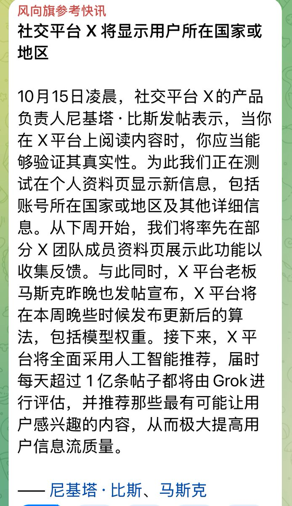

時璃風医詩🍥🌈
@hagishigure
@quasarne 應該不是ip，而是這裡這個選項的國家能被顯示在個人主頁，因為我通讀下來沒有發現任何直接提到網絡地址的信息，但是大模型算法也是另一種形式的《1984》的白色恐怖了

Αστήρない（淡推）
@quasarne
Twitter (X)即将显示IP属地
我们再一次遥遥领先！
双赢，就是中国赢两次。 https://t.co/nkckWNWyf5